<p class='titlep'> </p> <bodyP> <div class="person"></div> </bodyP> # Preserving Privacy ### CSE-400 <p class="blink" style="color:blue;font-size:24px;">xinxing.wu@midway.edu</p>
# Contents [Preserving Privacy](#/Privacy)<br> [Web Browsing History](#/History)<br> [Logs](#/Logs)<br> [HTTP headers](#/headers)<br> [Fingerprinting](#/Fingerprinting)<br> [Session Cookies](#/Session)<br> [Tracking Cookies](#/Tracking)<br> [Tracking Parameters](#/Parameters)<br> [Third-Party Cookies](#/ThirdPartyCookies)
# Contents (Cont.) [Private Browsing](#/Browsing)<br> [Supercookies](#/Supercookies)<br> [Permissions](#/Permissions)<br> [Location-Based Services](#/Services)
# Preserving Privacy
<p class='titlep'> </p> ## Preserving Privacy - Accounts: threats vs. defense => Keep accounts secure <img src="./images/account.gif" alt="drawing" width="300"/> ## Preserving Privacy - Focused on securing your accounts, your data, your systems, your software. - All of that is really about keeping communications between points A and B,<div class="popup" onclick="myFunction1()"><p class="blink" style="font-size:32px;"><spanBYMix> ...</spanBYMix></p> <span class="popuptext" id="myPopup1" STYLE="font-size:20px"> No one in between can actually access the information you're trying to share.<br> But what if you, A, don't even want B to have some of that information? ...do not want to share it beyond yourself.</span></div>
# Web Browsing History
<p class='titlep'> </p> ## Web Browsing History - You probably use every day whether you're on a laptop, or desktop, or mobile device. - Everything everywhere you go on the World Wide Web. <p>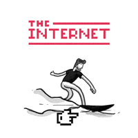</p> ## Web Browsing History - You occasionally go back through my history trying to find some web page that I know I was looking at earlier in the day, or yesterday, ... <p class='titlep'> </p> # <p class="hover-underline-animation">Are there any issues?</p> ## Web Browsing History - You might <spanRED>not</spanRED> want someone else who has physical access to your device to start poking through where it is you've gone. - You might <spanRED>not</spanRED> want someone else to have access if you just so happen to visit that website or those websites on maybe a computer in a lab environment, or an internet cafe, <p class='titlep'> </p> # <p class="hover-underline-animation">It invades your privacy </p> ## Web Browsing History - Might at least sanitize this history or remove it altogether <p>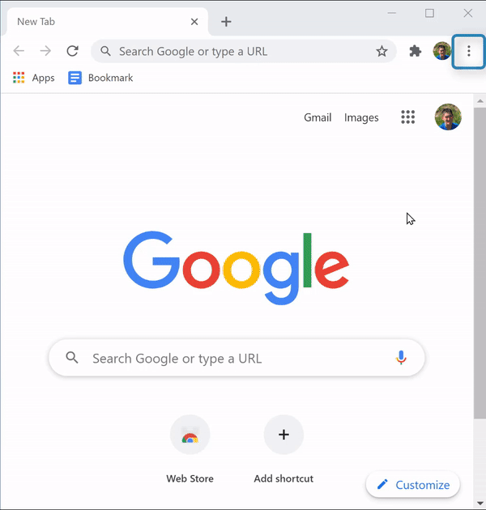</p>
# Logs
## Logs - A concern when it comes to your privacy <spanBYMix>beyond</spanBYMix> your own browser. - Any website you visit is, itself, <spanBYMix>on the server</spanBYMix> side also keeping track of a lot of information - that is, the servers have <spanBYMix>logs</spanBYMix> - These are <spanBYMix>not</spanBYMix> only for diagnostic purposes, the IT staff can use those logs to reconstruct history and figure it out <spanGREEN>who was doing what and when and how that might explain some problem</spanGREEN>. ## Logs - This log format, the so-called combined format <p>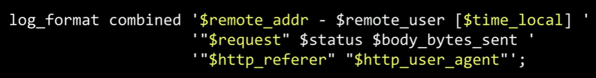</p> ## Logs - It includes,your IP address, some number of HTTP headers. <p>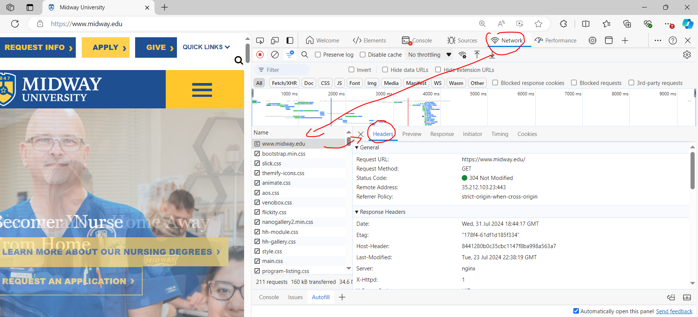</p> ## Logs - Recording relevant information during the execution of your program is a good practice as a Python developer when you want to gain a better understanding of your code. This practice is called <spanGREEN>logging</spanGREEN>. - [Logging in Python](https://realpython.com/python-logging/)
# HTTP headers
## HTTP headers - HTTP headers are just like key value pairs that are inside of those virtual envelopes - that indicate some kind of setting or some kind of piece of information - that the browser is sending to the server - or that the server is sending to the browser. ## HTTP headers - HTTP headers are just like key value pairs that are inside of those virtual envelopes <p>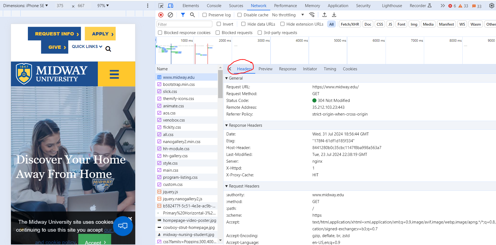</p> ## HTTP headers - Go on google.com and search <p>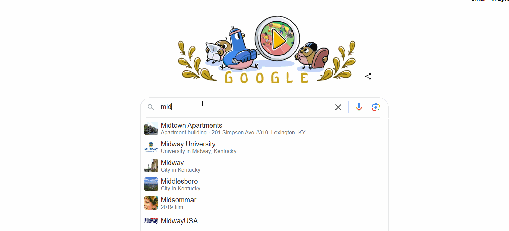</p> ## HTTP headers - Go on google.com and search <div class="wrapper nine"> <div> <h3 class="rotate"> <span>C</span> <span>O</span> <span>D</span> <span>I</span> <span>N</span> <span>G</span> </h3> </div> </div> ``` <a href="https://www.midway.edu/">Midway University</a> ``` ## HTTP headers - https://www.google.com/search?q=Midway+University <p>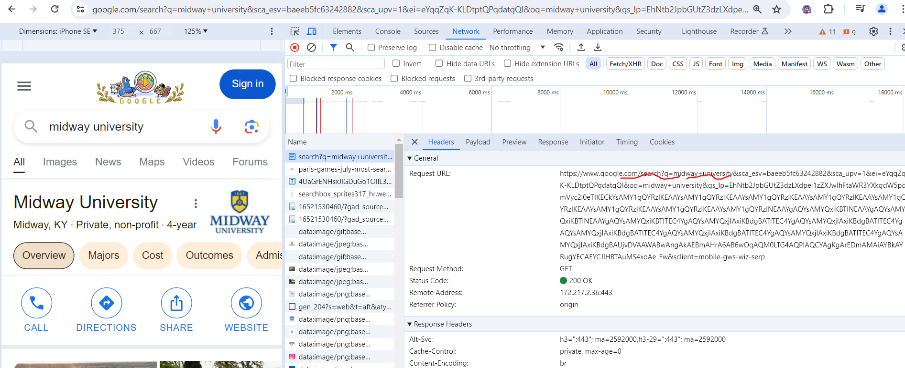</p> ## HTTP headers - You may send the referring address, but only send the origin, such as https://www.google.com/. - no search, path, no ?q=Midway+Univeristy. ## HTTP headers - The referrer policy can indicate that you only want the origin to be sent - The " origin " policy specifies that only the ASCII serialization of the origin of the request client is sent as referrer information when making both same-origin requests and cross-origin requests from a particular client. ## HTTP headers - You can actually indicate that no referrer should actually be sent - The Referrer-Policy HTTP header controls how much information is sent from a browser to a destination server when a user clicks on a hyperlink. ## HTTP headers - You can actually indicate that no referrer should actually be sent - Noreferrer (rel=“noreferrer”) is a keyword in the “rel” HTML link attribute that instructs the browser not to send any referrer information to the target resource when the user clicks the link on a page. ## HTTP headers - <b>Context</b>: When a user clicks a link on Page A to go to Page B, the browser usually sends a Referer header to Page B that tells it where the click came from. - <b>Privacy goal</b>: Don’t leak the full URL of the page the user came from (which can include paths and query strings like ?q=Midway+University). > Instead, only send the origin—just the scheme + host (+ port), e.g. https://www.google.com/. ## HTTP headers - “origin” means: - Full URL: https://www.google.com/search?q=Midway+University - Origin only: https://www.google.com/ - No path, no /search, no ?q=.... > How to enforce it (two common ways): ## HTTP headers - HTML meta tag ``` <meta name="referrer" content="origin"> ``` <hr> - HTTP response header ``` Referrer-Policy: origin ```
# Fingerprinting
## Fingerprinting - Your browser might be sharing without your realizing that it's making it available. - Fingerprinting that in the context of the web means to take as input a whole bunch of characteristics of the request from the internet that's coming in and see if you can use those characteristics to create a profile of sorts for the user via which you can uniquely identify that user. ## Fingerprinting - Another HTTP header that is typically sent by browsers to servers is called <spanRED>user agent</spanRED> - a unique string of text that uniquely identifies typically the browser, the version thereof and the operating system that you're using <p>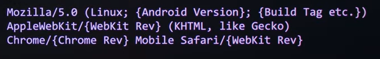</p> ## Fingerprinting <p>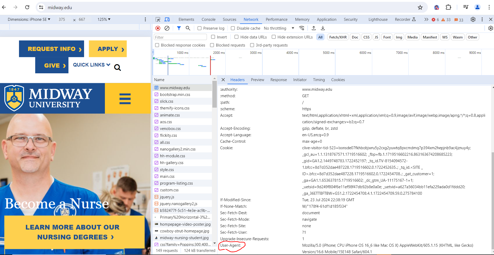</p> ## Fingerprinting - Mozilla/5.0: This part is used for compatibility and historical reasons. It indicates that the browser is compatible with the Mozilla family of browsers (this is standard even if you aren't using Mozilla Firefox). - Windows NT 10.0; Win64; x64: This specifies your operating system: ## Fingerprinting - Windows NT 10.0: Means you are using Windows 10. Win64; x64: Indicates you are on a 64-bit version of Windows. AppleWebKit/537.36: This shows that your browser uses the WebKit rendering engine, which is common in browsers like Chrome and Safari. ## Fingerprinting - (KHTML, like Gecko): This part is also for compatibility. It indicates that the browser behaves similarly to Gecko, the engine used by Firefox. - Chrome/130.0.0.0: Specifies that you are using Google Chrome version 130.0.0.0. ## Fingerprinting - Safari/537.36: Indicates compatibility with Safari browsers, specifically the version of the Safari engine it is mimicking. - Edg/130.0.0.0: This means you are using Microsoft Edge browser, which is based on Chromium (similar to Chrome), and the version is 130.0.0.0. ## Fingerprinting - If the server has the ability to send some code to your computer ... for instance, a server could figure out what the resolution is of your screen. ## An example <p>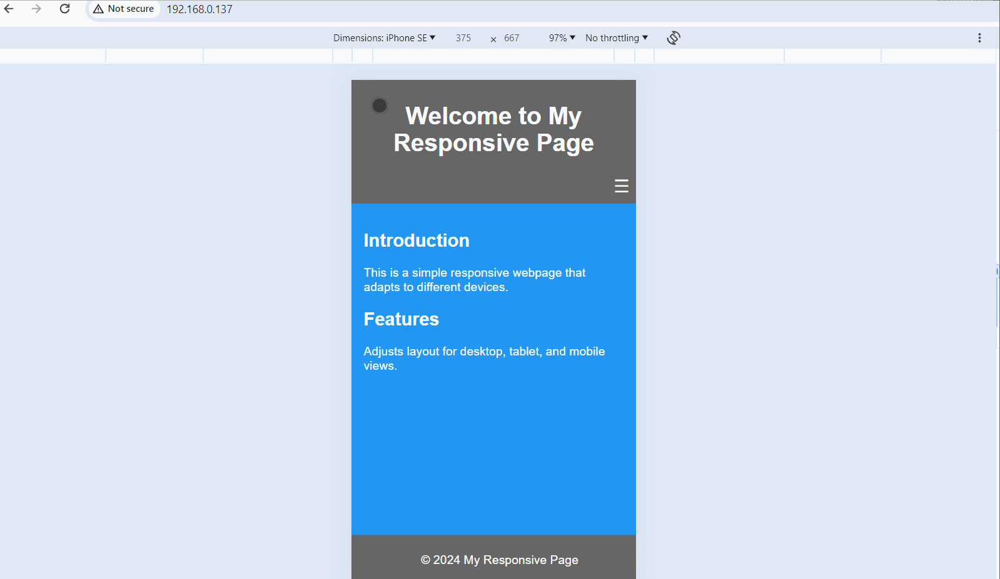</p> ## File: index.html <div class="wrapper nine"> <div> <h3 class="rotate"> <span>C</span> <span>O</span> <span>D</span> <span>I</span> <span>N</span> <span>G</span> </h3> </div> </div> ``` <!DOCTYPE html> <html lang="en"> <head> <meta charset="UTF-8"> <meta name="viewport" content="width=device-width, initial-scale=1.0"> <title>Responsive Web Page</title> <link rel="stylesheet" href="styles.css"> </head> <body> <header> <h1>Welcome to My Responsive Page</h1> <nav> <div class="menu-icon" onclick="toggleMenu()">☰</div> <ul id="nav-list"> <li><a href="#">Home</a></li> <li><a href="#">About</a></li> <li><a href="#">Services</a></li> <li><a href="#">Contact</a></li> </ul> </nav> </header> <main> <section> <h2>Introduction</h2> <p>This is a simple responsive webpage that adapts to different devices.</p> </section> <section> <h2>Features</h2> <p>Adjusts layout for desktop, tablet, and mobile views.</p> </section> </main> <footer> <p>© 2024 My Responsive Page</p> </footer> <script src="scripts.js"></script> </body> </html> ``` ## File: scripts.js <div class="wrapper nine"> <div> <h3 class="rotate"> <span>C</span> <span>O</span> <span>D</span> <span>I</span> <span>N</span> <span>G</span> </h3> </div> </div> ``` function toggleMenu() { var navList = document.getElementById('nav-list'); navList.classList.toggle('show'); } console.log("Responsive page loaded"); ``` ## File: styles.css <div class="wrapper nine"> <div> <h3 class="rotate"> <span>C</span> <span>O</span> <span>D</span> <span>I</span> <span>N</span> <span>G</span> </h3> </div> </div> ``` /* Basic styles */ body { font-family: Arial, sans-serif; margin: 0; padding: 0; box-sizing: border-box; background-color: #2E8B57; /* Default: Sea Green */ color: #fff; /* Ensure text is readable */ } header { color: #fff; padding: 1em; text-align: center; position: relative; background-color: #333; } nav { display: flex; justify-content: center; align-items: center; } nav ul { list-style: none; padding: 0; margin: 0; display: flex; } nav ul li { margin: 0 10px; } nav ul li a { color: #fff; text-decoration: none; } .menu-icon { display: none; cursor: pointer; font-size: 24px; margin-left: auto; } main { padding: 1em; } footer { color: #fff; text-align: center; padding: 1em; position: fixed; bottom: 0; width: 100%; background-color: #333; } /* Responsive styles */ @media (max-width: 1024px) { body { background-color: #4CAF50; /* Green */ } } @media (max-width: 768px) { body { background-color: #FF9800; /* Orange */ } header, footer { background-color: #555; /* Darker */ } .menu-icon { display: block; } nav ul { display: none; flex-direction: column; width: 100%; text-align: left; } nav ul li { margin: 5px 0; } nav ul.show { display: flex; } } @media (max-width: 480px) { body { background-color: #2196F3; /* Blue */ } header, footer { background-color: #666; /* Darkest */ } header, footer { padding: 0.5em; } nav ul li { margin: 5px 0; } } ``` ## An example - HTML:<div class="popup" onclick="myFunction2()"><p class="blink" style="font-size:32px;"><spanBYMix> ...</spanBYMix></p> <span class="popuptext" id="myPopup2" STYLE="font-size:20px"> Unchanged from the previous example.</span></div> - CSS: - <div class="popup" onclick="myFunction3()"><p class="blink" style="font-size:32px;"><spanBYMix> Basic Styles</spanBYMix></p> <span class="popuptext" id="myPopup3" STYLE="font-size:20px"> Set the default background color to sea green (#2E8B57) and ensure text is always white for readability.</span></div> - <div class="popup" onclick="myFunction4()"><p class="blink" style="font-size:32px;"><spanBYMix> Responsive Styles</spanBYMix></p> <span class="popuptext" id="myPopup4" STYLE="font-size:20px"> For screens with a max width of 1024px (e.g., tablets), the body background color changes to green (#4CAF50). For screens with a max width of 768px (e.g., small tablets and large phones), the body background color changes to orange (#FF9800), and the header and footer background colors change to a darker shade (#555). The menu icon is displayed, and the navigation menu is hidden by default. For screens with a max width of 480px (e.g., mobile phones), the body background color changes to blue (#2196F3), and the header and footer background colors change to the darkest shade (#666). Padding in the header and footer is reduced.</span></div> ## An example https://xinxingwu.github.io/getInfo/index.html
# Session Cookies
## Session Cookies - Beyond this user agent (A user agent is a software agent responsible for retrieving and facilitating end-user interaction with Web content) header, there's other headers that your browser is often sending back and forth with the server ## Session Cookies - A cookie is a piece of information that a server puts on your computer to help remember who you are. ## Session Cookies - Types of web cookies - Session cookies. These are temporary web cookies that are only present as long as your web browser stays open or your session is active. ... - Persistent cookies. ... - Third-party cookies. ... - First-party cookies. ... - User experience. ... - Advertising and marketing. ... - Analytics and web optimization. ... ## Session Cookies - A session cookie allows browsers and servers to maintain sessions - The server might also respond with this key value pair, this HTTP header, - The value of key is session=1234abcd. ## Session Cookies - It's a session cookie in the sense that it is supposed to expire when you close the browser, ... when you reboot ... ## Session Cookies - Your browser might say something like this, GET/ and then cookie: ## An example <p>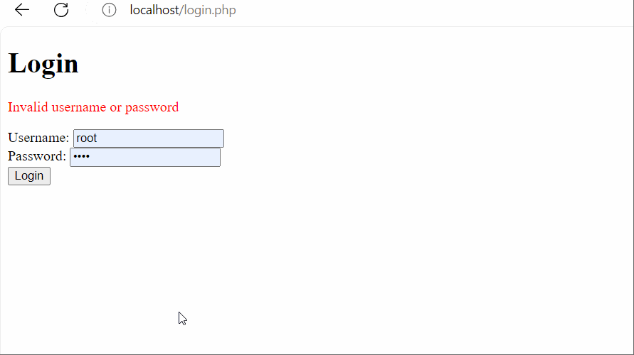</p> ## An example <div class="wrapper nine"> <div> <h3 class="rotate"> <span>C</span> <span>O</span> <span>D</span> <span>I</span> <span>N</span> <span>G</span> </h3> </div> </div> ``` <?php // Start the session session_start(); // Check if the user is already logged in if (isset($_SESSION['username'])) { header('Location: welcome.php'); exit; } // Check for form submission if ($_SERVER['REQUEST_METHOD'] == 'POST') { $username = $_POST['username']; $password = $_POST['password']; // Example credentials (in a real application, verify against a database) $validUsername = 'user'; $validPassword = 'pass'; if ($username === $validUsername && $password === $validPassword) { // Set session variable $_SESSION['username'] = $username; header('Location: welcome.php'); exit; } else { $error = 'Invalid username or password'; } } ?> <!DOCTYPE html> <html lang="en"> <head> <meta charset="UTF-8"> <meta name="viewport" content="width=device-width, initial-scale=1.0"> <title>Login</title> </head> <body> <h1>Login</h1> <?php if (isset($error)): ?> <p style="color: red;"><?php echo $error; ?></p> <?php endif; ?> <form method="post" action=""> <label for="username">Username:</label> <input type="text" id="username" name="username" required> <br> <label for="password">Password:</label> <input type="password" id="password" name="password" required> <br> <button type="submit">Login</button> </form> </body> </html> ``` ## An example <div class="wrapper nine"> <div> <h3 class="rotate"> <span>C</span> <span>O</span> <span>D</span> <span>I</span> <span>N</span> <span>G</span> </h3> </div> </div> ``` <?php // Start the session session_start(); // Check if the user is logged in if (!isset($_SESSION['username'])) { header('Location: login.php'); exit; } // Handle logout if (isset($_POST['logout'])) { // Destroy the session session_unset(); session_destroy(); header('Location: login.php'); exit; } ?> <!DOCTYPE html> <html lang="en"> <head> <meta charset="UTF-8"> <meta name="viewport" content="width=device-width, initial-scale=1.0"> <title>Welcome</title> </head> <body> <h1>Welcome, <?php echo htmlspecialchars($_SESSION['username']); ?>!</h1> <form method="post" action=""> <button type="submit" name="logout">Logout</button> </form> </body> </html> ``` ## An example - Step 1: Create a login form (login.php) - Starts a session using session_start(). - Checks if the user is already logged in by verifying if the session variable $_SESSION['username'] is set. If so, redirects to the welcome page. - Processes the form submission, validating the username and password. If valid, sets the session variable and redirects to the welcome page. - Displays a login form and an error message if the credentials are invalid. ## An example - Step 2: Create a welcome page (welcome.php) - Starts a session using session_start(). - Checks if the user is logged in by verifying if the session variable $_SESSION['username'] is set. If not, redirects to the login page. - Handles the logout process by destroying the session and redirecting to the login page. - Displays a welcome message with the logged-in user's username and a logout button. ## An example - This example demonstrates how to use PHP sessions to manage user login states and protect pages from unauthorized access.
# Tracking Cookies
## Tracking Cookies - When you're done with that browser tab or done using the browser for the day, - If you go back to the same website tomorrow, that cookie might not exist anymore, so you might as well look like or be a brand new user. ## Tracking Cookies - Tracking cookies, which are the exact same idea, key value pairs that are sent from server to browser to remember who you are, or at least, that you're the same person, even if we don't know that you're ## An example - Tracking cookies can be used to store information about users' activities on a website, such as their preferences or pages they have visited. An example of how to set and read tracking cookies using PHP. ## An example - Create a page to set tracking cookies (index.php) <p>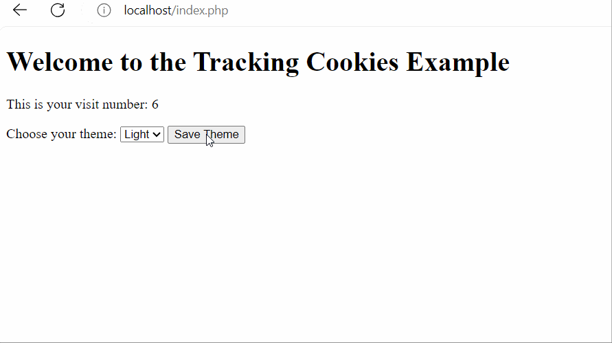</p> ## An example <div class="wrapper nine"> <div> <h3 class="rotate"> <span>C</span> <span>O</span> <span>D</span> <span>I</span> <span>N</span> <span>G</span> </h3> </div> </div> ``` <?php // Start the session (if needed for other purposes) session_start(); // Set a tracking cookie for the user's visit $cookie_name = "user_visit"; $cookie_value = isset($_COOKIE[$cookie_name]) ? $_COOKIE[$cookie_name] + 1 : 1; $cookie_expiry = time() + (86400 * 30); // 30 days setcookie($cookie_name, $cookie_value, $cookie_expiry, "/"); // Set a cookie to remember the user's preferred theme (light or dark) if (isset($_POST['theme'])) { setcookie('user_theme', $_POST['theme'], time() + (86400 * 30), "/"); // 30 days } $user_theme = isset($_COOKIE['user_theme']) ? $_COOKIE['user_theme'] : 'light'; ?> <!DOCTYPE html> <html lang="en"> <head> <meta charset="UTF-8"> <meta name="viewport" content="width=device-width, initial-scale=1.0"> <title>Tracking Cookies Example</title> <style> body { background-color: <?php echo $user_theme == 'dark' ? '#333' : '#fff'; ?>; color: <?php echo $user_theme == 'dark' ? '#fff' : '#000'; ?>; } </style> </head> <body> <h1>Welcome to the Tracking Cookies Example</h1> <p>This is your visit number: <?php echo $cookie_value; ?></p> <form method="post" action=""> <label for="theme">Choose your theme:</label> <select name="theme" id="theme"> <option value="light" <?php if ($user_theme == 'light') echo 'selected'; ?>>Light</option> <option value="dark" <?php if ($user_theme == 'dark') echo 'selected'; ?>>Dark</option> </select> <button type="submit">Save Theme</button> </form> </body> </html> ``` ## An example - Set a tracking cookie for user visits: - The script checks if the user_visit cookie is already set. If it is, it increments the value by 1. If not, it sets the value to 1. - The cookie is then set with an expiration time of 30 days. ## An example - Set a cookie for user preferences: - If the user submits the form to select a theme (light or dark), the selected theme is stored in a cookie named user_theme with an expiration time of 30 days. - Apply the user's preferred theme: - The user's preferred theme is read from the user_theme cookie and used to set the background and text colors of the page. ## An example - This example shows how to use cookies to track the number of visits and store user preferences. You can expand this by tracking other activities or preferences as needed.
# Tracking Parameters
## Tracking Parameters - If you and I are in the habit of deleting our cookies or clearing your history<div class="popup" onclick="myFunction5()"><p class="blink" style="font-size:32px;"><spanBYMix> ...</spanBYMix></p> <span class="popuptext" id="myPopup5" STYLE="font-size:20px"> Which would be counterproductive for Google or websites that are trying to track you in this way, but a plus for you and for my privacy.</span></div> <p class='titlep'> </p> # <p class="hover-underline-animation">Are there other ways servers can track us?</p> ## Tracking Parameters - HTTP parameters, tracking parameters. - Parameters are the key value pairs that often appear in URLs that are sent via GET requests typically. ``` https://www.google.com/search?q=cats ``` ## An example - Tracking users using HTTP parameters (also known as query parameters) is a common method to monitor user activity. An example where we use PHP to track users' actions on a website via tracking parameters ## An example - Create a page to set tracking cookies (index.php) <p>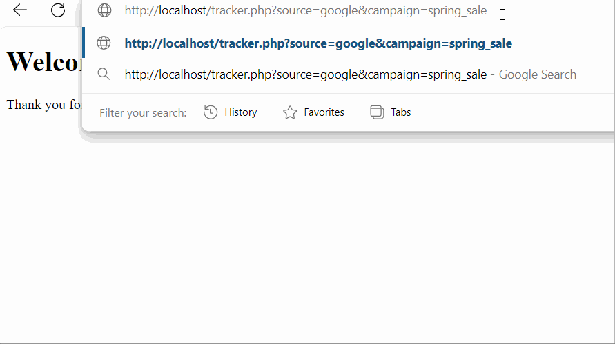</p> ## An example - tracker.php <div class="wrapper nine"> <div> <h3 class="rotate"> <span>C</span> <span>O</span> <span>D</span> <span>I</span> <span>N</span> <span>G</span> </h3> </div> </div> ``` <?php // Start the session session_start(); // Check if tracking parameters are present in the URL if (isset($_GET['source']) && isset($_GET['campaign'])) { // Retrieve the parameters $source = $_GET['source']; $campaign = $_GET['campaign']; // Store the tracking parameters in the session $_SESSION['tracking'] = [ 'source' => $source, 'campaign' => $campaign, ]; } // Example of storing tracking parameters in a database (you need a database setup for this to work) /* $servername = "localhost"; $username = "username"; $password = "password"; $dbname = "database"; $conn = new mysqli($servername, $username, $password, $dbname); if ($conn->connect_error) { die("Connection failed: " . $conn->connect_error); } $sql = "INSERT INTO tracking (source, campaign) VALUES ('$source', '$campaign')"; if ($conn->query($sql) === TRUE) { echo "New record created successfully"; } else { echo "Error: " . $sql . "<br>" . $conn->error; } $conn->close(); */ // Redirect to a landing page or home page after tracking header('Location: home.php'); exit; ?> ``` ## An example - home.php <div class="wrapper nine"> <div> <h3 class="rotate"> <span>C</span> <span>O</span> <span>D</span> <span>I</span> <span>N</span> <span>G</span> </h3> </div> </div> ``` <?php // Start the session session_start(); ?> <!DOCTYPE html> <html lang="en"> <head> <meta charset="UTF-8"> <meta name="viewport" content="width=device-width, initial-scale=1.0"> <title>Home Page</title> </head> <body> <h1>Welcome to the Home Page</h1> <?php if (isset($_SESSION['tracking'])): ?> <p>Thank you for visiting us via <strong><?php echo htmlspecialchars($_SESSION['tracking']['source']); ?></strong> campaign <strong><?php echo htmlspecialchars($_SESSION['tracking']['campaign']); ?></strong>.</p> <?php else: ?> <p>Welcome to our website!</p> <?php endif; ?> </body> </html> ``` ## An example - Step 1: Create a page to log tracking parameters (tracker.php) - This page will read tracking parameters from the URL and store them in a session or a database. - Step 2: Create a landing page (home.php) - This page will display the tracked information. ## An example - tracker.php: - Starts a session using session_start(). - Checks if the source and campaign tracking parameters are present in the URL. - Stores these parameters in the session for later use. ## An example - tracker.php: - Optionally, stores these parameters in a database for long-term tracking (commented out in this example). - Redirects the user to the home.php page after capturing the tracking parameters. ## An example - home.php: - Starts a session using session_start(). - Checks if the tracking parameters are stored in the session. - Displays a personalized message based on the tracking parameters. ## An example - When a user visits this URL (http://localhost/tracker.php?source=google&campaign=spring_sale), the tracking parameters (source and campaign) are captured and stored. The user is then redirected to the home page with a personalized message based on the tracking information.
# Third-Party Cookies
## Third-Party Cookies - Another way to think about tracking cookies is to consider them to be third-party cookies ... even in the Google example, that's how they're being used. - If a website like example.com is embedding Google Analytics (https://analytics.google.com/) ... your browser might get cookies from both example.com and google.com. ## Third-Party Cookies - ... But the most important ones, presumably, are the first-party ones from example.com because that is the website you chose to go to and whose functionality you want to use. ## Third-Party Cookies - Third-party cookies are HTTP cookies which are used principally for web tracking as part of the web advertising ecosystem. While HTTP cookies are normally sent only to the server setting them or a server in the same Internet domain, a web page may contain images or other components stored on servers in other domains. ## Third-Party Cookies - E.g., hosted under the same Internet domain (e.g., all belonging to example.com). Using the same domain allows for consistency in branding, shared resources like cookies, and easy navigation among subdomains (e.g., blog.example.com, shop.example.com, etc.). ## Third-Party Cookies - The third-party functionality, like tracking your clicks and your internet behavior on that site via Google, that's third party. <p class='titlep'> </p> # <p class="hover-underline-animation">How to disable third-party cookies?</p> ## Third-Party Cookies <p>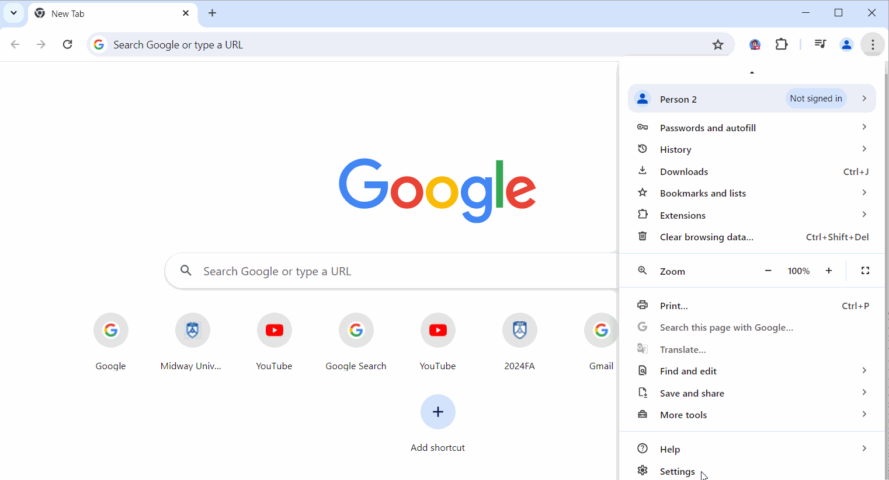</p> ## Third-Party Cookies - Block third-party cookies: - This setting blocks third-party cookies in all browsing modes (both regular and Incognito). - Third-party cookies from other domains (like those used for tracking across sites) are blocked whenever you’re browsing, regardless of privacy mode. ## Third-Party Cookies - Block third-party cookies in Incognito mode: - This setting only blocks third-party cookies when you’re in Incognito mode. - In regular browsing, third-party cookies are still allowed, so websites can still use them for tracking or personalization. In Incognito, however, third-party cookies are automatically blocked to increase privacy. ## Third-Party Cookies - Google being one of them for <spanBYMix>advertisements and for analytics</spanBYMix> ... if lots of different websites are using them - third party, if it is being embedded at Midway, that third party Google, for instance, kind of has eyes into Midway Websites. - If it sends the same cookie to you on Midway, Google might actually know that you're on Midway website. ## A simulation - Third-party cookies are set by domains other than the one the user is currently visiting. These cookies are often used for tracking and advertising purposes. An example of how to set and read third-party cookies using PHP. ## A simulation - To create third-party cookies, we simulate two separate domains (or subdomains): - Main site: example.com - Third-party site: tracker.com ## A simulation - Simulation - When a user visits the main site (example.com/index.php), the iframe loads the page from the third-party site (tracker.com/set_cookie.php), which sets the third-party cookie. - The third-party site can later read the cookie using tracker.com/read_cookie.php. ## A simulation - We will not implement this example - When simulating different domains locally on a single machine, you can use your hosts file to create fake domains pointing to localhost. This way, you can simulate requests and cookies as if they were coming from different domains. ## A simulation <p>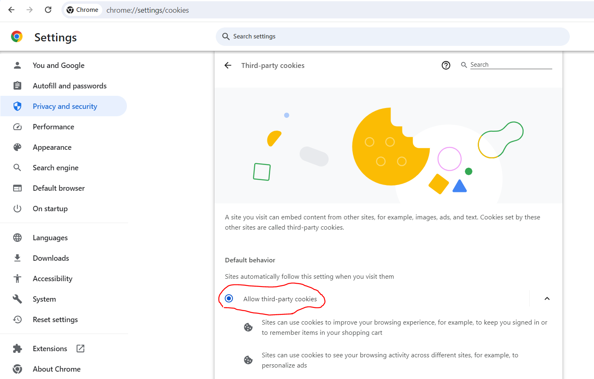</p> ## A simulation - tracker.com/set_cookie.php <div class="wrapper nine"> <div> <h3 class="rotate"> <span>C</span> <span>O</span> <span>D</span> <span>I</span> <span>N</span> <span>G</span> </h3> </div> </div> ``` <?php // Set a third-party cookie $cookie_name = "third_party_user"; $cookie_value = "12345"; // Example user identifier $cookie_expiry = time() + (86400 * 30); // 30 days setcookie($cookie_name, $cookie_value, $cookie_expiry, "/", ".tracker.com", true, true); ?> <!DOCTYPE html> <html lang="en"> <head> <meta charset="UTF-8"> <meta name="viewport" content="width=device-width, initial-scale=1.0"> <title>Set Third-Party Cookie</title> </head> <body> <h1>Third-Party Cookie Set</h1> <p>The third-party cookie has been set successfully.</p> </body> </html> ``` ## A simulation - example.com/index.php <div class="wrapper nine"> <div> <h3 class="rotate"> <span>C</span> <span>O</span> <span>D</span> <span>I</span> <span>N</span> <span>G</span> </h3> </div> </div> ``` <?php // Start the session (if needed) session_start(); ?> <!DOCTYPE html> <html lang="en"> <head> <meta charset="UTF-8"> <meta name="viewport" content="width=device-width, initial-scale=1.0"> <title>Main Site</title> </head> <body> <h1>Welcome to the Main Site</h1> <p>This site uses third-party cookies for tracking purposes.</p> <iframe src="http://tracker.com/set_cookie.php" style="display:none;"></iframe> </body> </html> ``` ## A simulation - tracker.com/read_cookie.php <div class="wrapper nine"> <div> <h3 class="rotate"> <span>C</span> <span>O</span> <span>D</span> <span>I</span> <span>N</span> <span>G</span> </h3> </div> </div> ``` <?php // Check if the third-party cookie is set $cookie_name = "third_party_user"; if (isset($_COOKIE[$cookie_name])) { $cookie_value = $_COOKIE[$cookie_name]; } else { $cookie_value = "Cookie not set"; } ?> <!DOCTYPE html> <html lang="en"> <head> <meta charset="UTF-8"> <meta name="viewport" content="width=device-width, initial-scale=1.0"> <title>Read Third-Party Cookie</title> </head> <body> <h1>Read Third-Party Cookie</h1> <p>Third-party cookie value: <?php echo htmlspecialchars($cookie_value); ?></p> </body> </html> ``` ## A simulation - Step 1: Create a page on the third-party site to set cookies (tracker.com/set_cookie.php) - This page will set a third-party cookie. - Step 2: Create a page on the main site to load the third-party cookie (example.com/index.php) - This page will load the third-party cookie by including an iframe that points to the third-party site. ## A simulation - Step 3: Create a page on the third-party site to read cookies (tracker.com/read_cookie.php) - This page will read and display the third-party cookie. ## A simulation - tracker.com/set_cookie.php: - Sets a third-party cookie with a name third_party_user, value 12345, and an expiry time of 30 days. The setcookie function includes parameters to ensure the cookie is set for the entire tracker.com domain, and it is marked as secure and HTTP-only. ## A simulation - example.com/index.php: - Includes an iframe that points to the third-party site (tracker.com/set_cookie.php). This iframe loads the page that sets the third-party cookie when the main site is visited. ## A simulation - tracker.com/read_cookie.php: - Reads the third-party cookie and displays its value. ## A simulation - This example demonstrates the basics of setting and reading third-party cookies. - Modern browsers have implemented stricter privacy controls that may block or restrict third-party cookies, and it is essential to be aware of privacy regulations such as<div class="popup" onclick="myFunction6()"><p class="blink" style="font-size:32px;"><spanBYMix> GDPR</spanBYMix></p> <span class="popuptext" id="myPopup6" STYLE="font-size:20px"> The General Data Protection Regulation (GDPR) is a comprehensive data protection law enacted by the European Union (EU) that went into effect on May 25, 2018. It aims to protect the privacy and personal data of individuals within the EU and the European Economic Area (EEA).</span></div> and<div class="popup" onclick="myFunction7()"><p class="blink" style="font-size:32px;"><spanBYMix> CCPA</spanBYMix></p> <span class="popuptext" id="myPopup7" STYLE="font-size:20px"> The California Consumer Privacy Act (CCPA) is a state-wide data privacy law that was enacted in California, USA. It went into effect on January 1, 2020. The CCPA provides California residents with rights regarding the collection and use of their personal data.</span></div> when implementing tracking solutions. # <p class="hover-underline-animation">What can we do to protect all the more of our privacy?</p>
# Private Browsing
<p class='titlep'> </p> # <p class="hover-underline-animation">Have you used private browsing?</p> ## Private Browsing <p>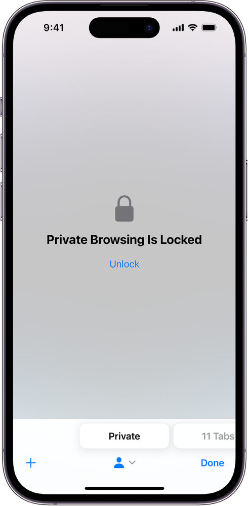</p> <p class='titlep'> </p> ## <p class="hover-underline-animation">You don't necessarily have to delete all of your browser history and delete all of your cookies.</p> > Doesn't remember any of your past usernames and passwords. - Starting fresh - everything you do in that window is brand new. ## Private Browsing - ctrl + shift + n <img src="./images/addWeek12.jpg" alt="drawing" width="800"/> ## Private Browsing - Everything you do in that window still works exactly as the web works as we have been describing. ## Private Browsing > have tracking parameters > have tracking cookies > have server logs ... ## Private Browsing - The information is discarded from your computer ...you're starting fresh with that server, except for the reality, as per our past discussion, that fingerprinting is still a possibility. Your IP address .. your browser might still be leaking. > Private browsing is entirely client side - Those logs that we have mentioned are still being stored by the server. - You're in private or incognito mode ... it doesn't mean that your tracks are completely absent from the internet. not eliminating the probability that a server still knows that it's you ## Private Browsing - If you design your own websites, using private browsing or incognito mode can also be useful for development purposes - It's a way of opening a brand new window that has no recollection of maybe past bugs that you had or past web pages that you clicked on.
# Supercookies
## Supercookies - A super cookie is a cookie meant to be stored on a user's computer indefinitely. Super cookies <spanRED>cannot</spanRED> be removed in the same way that regular cookies can, making them more challenging for users to recognize and eliminate. ## Supercookies - These are cookies that are typically injected by a third party<div class="popup" onclick="myFunction8()"><p class="blink" style="font-size:32px;"><spanBYMix>...</spanBYMix></p> <span class="popuptext" id="myPopup8" STYLE="font-size:20px"> Like your company, your university, or your internet service provider into your HTTP request, which is to say, if you, from your browser, visit some website, that traffic, goes from your laptop or phone through some internet service provider, whether it's on campus, or home, or wirelessly in the real world.</span></div> - If whoever is providing you with that internet service can see the contents of that virtual envelope, there's technically nothing stopping them from opening up the envelope. ## Supercookies - A good defense <br> ## Supercookies - Never use HTTP without encryption <br> <div class="popup" onclick="myFunction9()"><p class="blink" style="font-size:100px;"><spanBYMix> ?</spanBYMix></p> <span class="popuptext" id="myPopup9" STYLE="font-size:20px"> If URLs are always https: theoretically, this attack or this "feature" of your mobile phone carrier should not be possible.</span></div>
# Permissions
## Permissions 🌞 - One final mechanism when it comes to preserving one's privacy on devices - permissions - iOS, and Android, and other operating systems have evolved .. being asked by our operating systems, do you want to allow this? <p>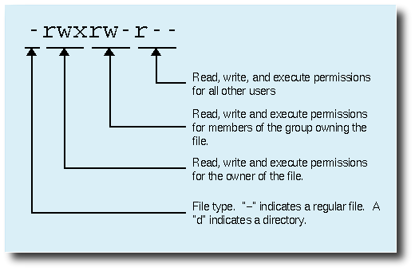</p> ## Permissions - Not only allow the program to run, but allow this program to access your camera your microphone, your contacts<div class="popup" onclick="myFunction10()"><p class="blink" style="font-size:32px;"><spanBYMix> ?</spanBYMix></p> <span class="popuptext" id="myPopup10" STYLE="font-size:20px"> If you don't enable the camera and give access to the app, it just might not work because they have some code in their application that says if camera's not on, then do not do anything useful. So there's this tension between usability and privacy in this case.</span></div>
# Location-Based Services
<p class='titlep'> </p> ## <p class="hover-underline-animation">Assume you have a house and wanted to puta fence between you and your neighbor ... </p> - LandGlide, OnX App, ReGRID) known for helping users/homeowners find their property lines. <iframe width="949" height="534" src="https://www.youtube.com/embed/0ZjfkqBOaSE" title="How to Find the Property Lines of Any Home (Version 3)" frameborder="0" allow="accelerometer; autoplay; clipboard-write; encrypted-media; gyroscope; picture-in-picture; web-share" referrerpolicy="strict-origin-when-cross-origin" allowfullscreen></iframe> ## Location-Based Services 🌞 - A location-based service (LBS) is a software service for mobile device applications that requires knowledge about where the mobile device is geographically located. The application collects geodata, which is data gathered in Real Time using one or more location tracking technologies. ## Location-Based Services - Our phones can effectively track our location using GPS, or Wi-Fi, or some other technology. <p>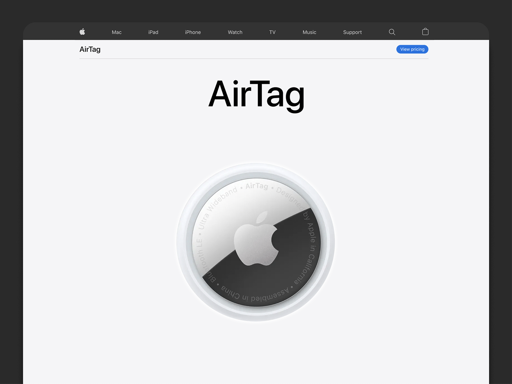</p> ## Location-Based Services - Your AirTag sends out a secure Bluetooth signal that can be detected by nearby devices in the Find My network. These devices send the location of your AirTag to iCloud — then you can go to the Find My app and see it on a map. The whole process is anonymous and encrypted to protect your privacy. <p>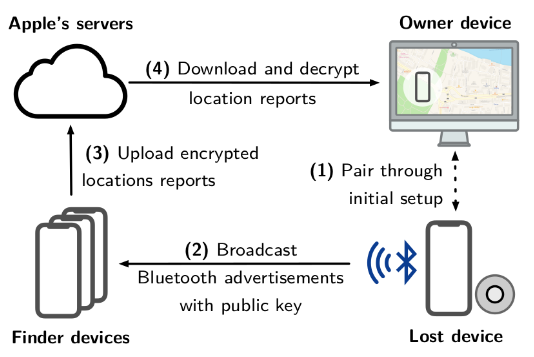</p> ## Location-Based Services - An AirTag has two different ranges: its Bluetooth range is about 30 to 100 feet (10 to 30 meters), which is used for close-range, precise finding. However, when out of Bluetooth range, it can be tracked virtually anywhere through the anonymous Find My network, which relies on other Apple devices to relay its location, offering a much greater range. ## Location-Based Services - Using mapping pplications, like Google Maps, help us get physically from point A to point B. <p class="hover-underline-animation">How could they provide me with mapping services? </p> <p class='titlep'> </p> # <p class="hover-underline-animation">They must be keeping track of your location - your privacy </p>